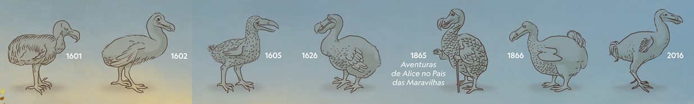

Outras Informações

A imagem da ave extinta que não voa inspirou artistas e alimentou lendas durante séculos, mas com o tempo torna-se mais nítida. Ferramentas científicas modernas e fósseis recém-descobertos estão a fornecer aos cientistas novos dados sobre a anatomia e ciclo de vida desta ave misteriosa da ilha Maurícia.
Relatos da Época
Com base em relatos iniciais de marinheiros, esboços e pinturas de dodós em cativeiro, a imagem da ave deu uma guinada fantástica. Em 1600, os retratos cómicos de uma ave atarracada tornaram-se o padrão para futuros clássicos como “Aventuras de Alice no País das Maravilhas”.
Ciclo de Vida de um Dodô